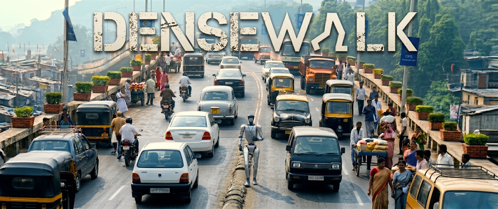

Amitava Das
Professor, BITS Goa | Former Research Associate Professor, AIISC, USA

Egocentric walk-through data
Advance, slow, sidestep, yield, wait
Bottleneck, crossing, occlusion, gaps, narrowing lanes
Success up, collisions and near-misses down
Humanoid navigation has advanced in structured indoor spaces and relatively orderly outdoor scenes, but remains weakly studied in India and other populous, crowded, and chaotic Global South urban environments, where pedestrians, carts, auto-rickshaws, cars, buses, and roadside activity interact within narrow, shifting corridors under persistent occlusion and weak lane structure. In these settings, safe traversal requires continual local decision-making about when to advance, slow, sidestep, yield, or wait.
DENSEWALK is a data-and-benchmark pipeline for this regime. Starting from 200 hours of egocentric walk-through videos, we first estimate monocular depth to recover local geometry, detect and track nearby pedestrians and vehicles, use optical flow to capture short-horizon motion, and infer feasible gaps and walking corridors through traversability analysis.
We then use these structured cues to derive short-horizon navigation decisions with a VLA model and generate motion-grounded textual descriptions with an LLM, yielding paired action-and-language supervision for dense urban humanoid navigation.
Using this data, we train OpenVLA for short-horizon humanoid navigation and evaluate it in DENSEWALK, a benchmark spanning mixed-agent bottlenecks, crossing events, blind occlusion, temporary gap openings, and dynamically narrowing free space.
In Isaac Sim, we instantiate human agents and add carts, cars, buses, and roadside obstacles as dynamic or static artifacts to recreate dense mixed-agent flow, bottlenecks, occlusion, and weakly structured right-of-way.
We measure task success rate, collision rate, near-miss rate, fall rate, minimum clearance, deadlock time, and social compliance. Our framework improves success by X%, reduces collisions by Y%, lowers near-misses by Z%, and yields safer clearance and more stable locomotion than geometry-only, action-only, and non-language baselines.
Navigation policy quality improves when local geometry, motion, traversability, and language supervision are jointly used.
Evaluation tracks success, collision, near-miss, fall, clearance, deadlock, and social compliance in dense mixed-agent flow.
Professor, BITS Goa | Former Research Associate Professor, AIISC, USA

GenAI Leadership @ AWS | Stanford AI | Ex-Amazon Alexa, Nvidia, Qualcomm | EB-1 "Einstein Visa" Recipient | EMNLP 2023 Outstanding Paper Award

Applied Research Scientist Lead at Facebook AI Research | 6k+ citations | Ex-Citadel | CMU | IIT Kanpur | Startup Advisor & Mentor | Angel Investor | EB1A green card recipient

AI @ Meta | Ex-Amazon, Oracle, PANW | Stanford AI | EMNLP Outstanding Paper Award Recipient